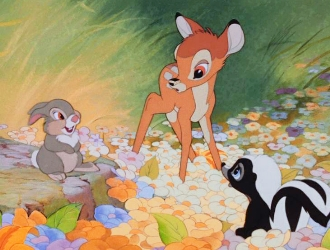
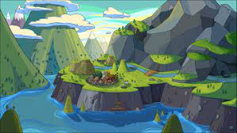
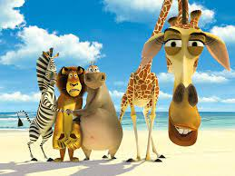

El medio ambiente es el conjunto de componentes fisicos, quimicos, biológicos
de las personas o de la sociedad en su conjunto. Comprende el conjunto de valores naturales, sociales y culturales existentes en un lugar y en un momento determinado, que influyen en la vida del ser humano y en las generaciones futuras. Es decir, no se trata solo del espacio en el que se desarrolla la vida, sino que también comprende a los:
Seres vivos,objetos, agua, suelo y las relaciones entre ellos.
Sin embargo este sistema no solo está conformado por seres vivos, sino también por elementos abióticos (sin vida) y por elementos artificiales.
La actividad del hombre, con mayores intereses en su bienestar que en la conservación de ese equilibrio, ha conseguido iniciar un proceso de degradación medioambiental que de seguir así, nos puede llevar a un verdadero caos.



Cuando se habla de seres vivos se hace referencia a los factores bióticos, sea flora, fauna o incluso los seres humanos. En oposición, los factores abióticos son aquellos que carecen de vida. Sin embargo estos elementos resultan esenciales para la subsistencia de los organismos vivos, como el aire, el suelo y el agua. Entre los elementos artificiales incluimos a las relaciones socioeconómicas, como la urbanización, los conflictos dentro de una sociedad, etc.
El medio ambiente, según otros autores, es considerado como la suma de las relaciones culturales y sociales, en un entorno, en momento histórico y un lugar en particular.
 Página Siguente
Página Siguente